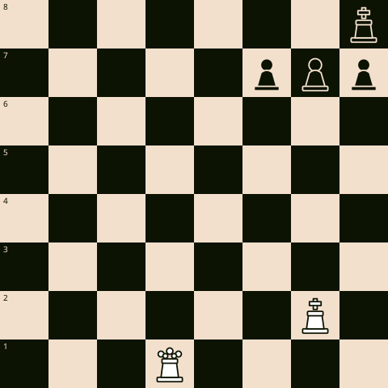
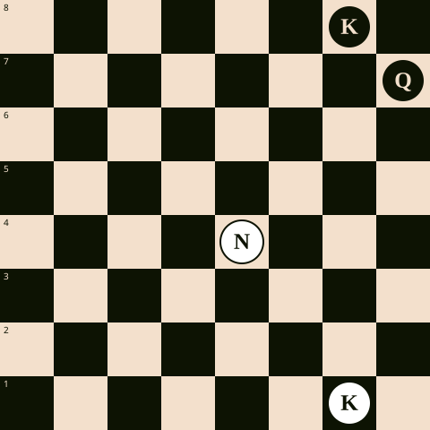
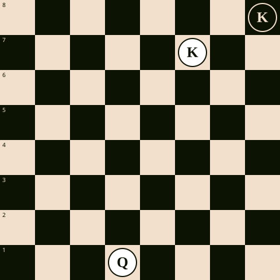

Ajedrez · Ejercicios
Tres ejercicios de ajedrez, de principiante a avanzado
Tres posiciones construidas para practicar tres ideas distintas: un mate directo, una combinación que gana material, y una técnica de conversión básica que todo jugador necesita tarde o temprano. La dificultad no está solo en la longitud de la solución, sino en qué tan visible es la idea.
Nivel: Principiante
Las blancas juegan y dan mate en un movimiento. El rey negro está encerrado por sus propios peones.

Ver solución
1. Dd8#
La dama llega a la octava fila con jaque. El rey no puede huir: g8 y f8 están controlados por la propia dama a lo largo de la fila, y f7, g7, h7 están ocupados por sus propios peones. Ningún peón negro puede interponerse, porque los peones negros avanzan hacia la primera fila, no hacia la octava.
Nivel: Intermedio
Las blancas juegan y ganan la dama negra en dos movimientos.

Ver solución
1. Cf6+ Rh8 (o Rf8) 2. Cxh7
El caballo salta a f6 dando jaque al rey y atacando la dama al mismo tiempo — una horquilla. La dama en h7 no puede capturar el caballo (f6 no está a distancia de dama desde h7 en línea recta ni diagonal), así que el rey debe moverse primero. Hecho eso, el caballo captura la dama en la jugada siguiente.
Nivel: Avanzado
Solo quedan los reyes y la dama blanca. Blancas juegan y dan mate en un movimiento: encuentra la única casilla que funciona.

Ver solución
1. Dh1#
La dama da jaque a lo largo de la columna h. El rey negro no puede capturarla (está demasiado lejos) ni moverse a g8 o g7: ambas casillas están controladas por el rey blanco en f7. Esta es la técnica base de mate con dama y rey — el rey propio hace la mitad del trabajo, cortando las casillas de escape, mientras la dama entrega el jaque final desde una distancia segura. Un error frecuente en este final es dar jaque demasiado pronto sin haber acercado antes el rey, lo que solo empuja al rey rival sin lograr el mate.